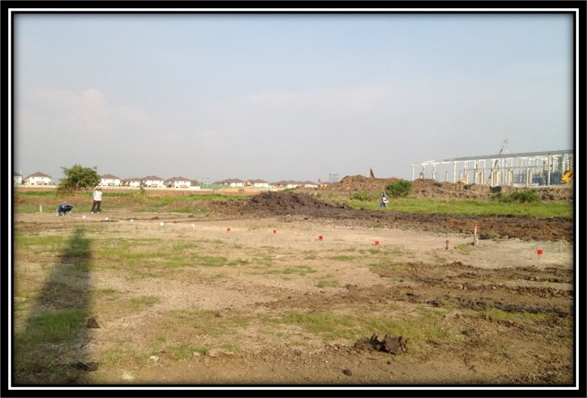
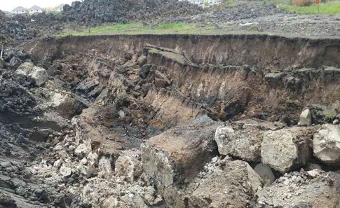

Contact Us


บริษัท ไทยซีเมนต์คอลัมน์ จำกัด ได้ทดสอบจำลองการพังทลายของดินในงานขุดระดับตื้น โดยใช้การทดสอบขนาดของเสาเข็มดิน-ซีเมนต์ ขนาด 0.80 เมตร และ 1.00 เมตร
- การปรับปรุงคุณภาพดินเหนียวอ่อนด้วยวิธี Jet Mixing เพื่อให้ดินที่มีคุณภาพต่ำไม่เหมาะสมที่จะนำมาใช้ในงานก่อสร้างให้เปลี่ยนสภาพเป็นดินที่แข็งตัวมากขึ้น มีคุณสมบัติทางวิศวกรรมดีขึ้นและสามารถนำมาใช้ประโยชน์ในการก่อสร้างให้มีความแข็งแรง ปลอดภัยเพิ่มมากยิ่งขึ้น
โดยในการศึกษานี้ได้รวบรวมขั้นตอนการทดสอบการใช้เสาเข็มดินซีเมนต์ในงานขุดระดับตื้น ซึ่งผลทดสอบที่ได้สามารถนำไปใช้เป็นข้อมูลในการออกแบบต่อไป
- การก่อสร้างเสาเข็มดินซีเมนต์ได้ดำเนินการทำแปลงทดสอบไว้จำนวน 2 แปลง ตามผังบริเวณแปลงทดสอบ และแสดงภาพตัด โดยมีรายละเอียด และค่าของตัวแปรที่ให้ในการทดสอบตัวอย่างเสาเข็มดินซีเมนต์ดังแสดงในตาราง
หลังจากดำเนินการก่อสร้างตามรูปแบบและปล่อยให้เสาเข็มดิน-ซีเมนต์ พัฒนากำลังที่อายุ 28 วัน ขั้นตอนการจำลองการขุดจะดำเนินการขุดที่ความลึกทุกๆ 1 เมตร และทิ้งไว้ 24 ชั่วโมง และวัดการเคลื่อนตัวของเสาเข็มดิน-ซีเมนต์ในช่วงก่อนเริ่มงานขุดในช่วงความลึกถัดไป
ทำการขุดดินโดยเพิ่มระดับความลึกครั้งละ 1 เมตร จนกระทั่งเสาเข็มวิบัติ
- การจำลองนี้เป็นเพียงข้อมูลเบื้องต้นสำหรับการเตรียมข้อมูลเพื่อนำไปออกแบบต่อไป
- ไม่สามารถนำไปใช้อ้างอิงได้